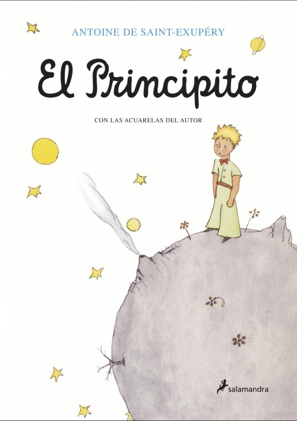
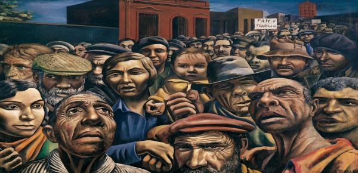

nuestro objetivo es contarte mas sobre nuestro proyecto
Nos adentramos en el estudio del hombre y sus relaciones sociales, desde ahí desglosamos las aptitudes humanas, el camino del hombre, como se relaciona con el tiempo, cómo reacciona al contexto, el hábitat natural y ciertos temas de interés del material tales como el medioambiente, el estado de los géneros en la sociedad actual como el rol de la mujer, y un especial énfasis en cómo todo esto converge en las expresiones artísticas a modo de profecía en lo que anuncia y denuncia, excitando las aristas del hombre a despertar, conmoviéndolo tanto desde la palabra como también desde lenguajes universales como la música o la pintura.
Explorá nuestras secciones
El Principito

Escrito por Antoine de Saint-Exupéry y publicado en 1943.
La historia sigue a un piloto varado en el desierto del Sahara que conoce a un pequeño príncipe que viene de otro planeta. A lo largo de su conversación, el príncipe le cuenta al piloto sobre su vida en su pequeño planeta y las aventuras que ha tenido mientras viajaba por el universo.
El libro termina con el príncipe regresando a su planeta después de haber aprendido lecciones valiosas de su encuentro con el piloto. El piloto se encuentra con el príncipe una vez más después de haber sido rescatado del desierto. El pequeño le dice al piloto que se irá pronto, pero que siempre estarán juntos debido a su amistad. La historia concluye con el piloto reflexionando sobre su encuentro con el Principito y cómo ha cambiado su vida para siempre.
Lenguaje
muy simbólico, apela a metáforas y un tono un tanto onírico
registro sencillo, en formato de libro para chicos
mensaje bastante indirecto (poético)
temas universales y muy humanos (amistad, amor, soledad, identidad, sentido de la vida)
"Sólo se ve bien con el corazón; lo esencial es invisible a los ojos"
"Fue el tiempo que pasaste con tu rosa lo que la hizo tan importante"
"Si vienes a las cuatro de la tarde, comenzaré a ser feliz desde las tres"
"Si juzgas a la gente, no tienes tiempo de amarla"
"Mi dibujo no fue un fracaso. Simplemente, mi flor aún no había florecido"
"El amor no consiste en mirar al otro, sino en mirar juntos en la misma dirección"
"Los hombres ya no tienen tiempo para conocer nada. Compran las cosas ya hechas a los comerciantes; pero como no existe ningún comerciante de amigos, los hombres ya no tienen amigos"
Los ejecutivos (M. E. Walsh)
La canción de María Elena Walsh “Los Ejecutivos” es un claro ejemplo de su genialidad al utilizar la ironía y la agudeza para criticar aspectos sociales de su época, aspectos que, lamentablemente, se mantienen vigentes en muchos contextos de la actualidad. Analicemos algunas de las críticas sociales presentes en la letra:
Desigualdad Social
"El mundo nunca ha sido para todo el mundo"
Poder Corporativo
El señor que "trajina para darnos la ilusión / De un cielo en tecnicolor" y que solo permite que "muy poquitos / Aprendan a jugar al golf"
Medios de comunicacion y manipulacion
"un cielo en tecnicolor";y aconsejar "por televisión"
Consumismo
"Ahorrar para tener estatus en la muerte / La eternidad en un reloj"
Vacuidad de la elite
"Sonriente y afeitado para siempre"; "Cultiva un maletín, pero ninguna flor"
Control y dominio
o "Y además tienen la sartén / La sartén por el mango / Y el mango también”
Antonio Berdi
En el aspecto funcional del arte y su invitación a la reflexión que en una de esas puede quizás incluso llegar a la acción, nos centraremos en el análisis de la obra de Antonio Berdi. Este artista plástico es otro ejemplo de la escena local que encarna también el papel de denunciante sobre todo de la crisis social en Latinoamérica. Berdi se atreve a poner sobre la mesa la problemática de la concentración de riquezas y poder en mano de unos pocos haciendo énfasis en los más vulnerados por esta dinámica.
Sin pan y sin trabajo
La pintura "Sin pan y sin trabajo" de Antonio Berni se sumerge en la cruda realidad de la pobreza durante la Gran Depresión en Argentina. La composición destaca la vulnerabilidad de una familia desfavorecida, mostrándola en condiciones precarias y desesperantes. Los personajes, desposeídos de recursos y oportunidades, expresan su sufrimiento a través de gestos y posturas corporales. La representación detallada de sus rostros refleja la carga emocional de la lucha diaria por la supervivencia.
Berni utiliza colores oscuros y tonos apagados para acentuar la gravedad de la situación, creando una atmósfera de desesperanza. La falta de pan y empleo, como sugiere el título, simboliza la escasez de recursos básicos y oportunidades económicas para los menos privilegiados.
La elección del realismo socialista por parte de Berni refuerza su compromiso con la representación de las luchas y desigualdades sociales. La obra se convierte en una llamada de atención, un testimonio visual de las condiciones injustas que enfrentan los más vulnerables.
Manifestacion

En "Manifestación", Berni captura el espíritu de la protesta y la búsqueda de justicia social. La escena de la manifestación se llena de figuras que expresan determinación y unidad en su lucha contra la opresión. Los colores vibrantes y la energía de las masas contrastan con el tono más sombrío de "Sin pan y sin trabajo", sugiriendo la esperanza y la fuerza colectiva en la resistencia.
Las caras de los manifestantes reflejan una diversidad de emociones, desde la ira hasta la determinación y la solidaridad. Berni captura la dinámica de un movimiento social, destacando la importancia de la acción colectiva en la lucha por los derechos y la igualdad.
La presencia de pancartas y consignas refleja las demandas específicas de los manifestantes, contextualizando la lucha en el contexto de problemas socioeconómicos. La inclusión de detalles específicos y la representación simbólica de la lucha refuerzan la intención del artista de abordar cuestiones sociales apremiantes.
Conclusion
podemos remarcar que en ambas obras de Berni, se encuentra una representación de la lucha contra la desigualdad social y la injusticia económica. Estas pinturas capturan la realidad de las personas desfavorecidas durante la Gran Depresión en Argentina y la fuerza de aquellos que se unen en manifestaciones en busca de justicia. A través del realismo socialista, Berni proporciona una ventana al sufrimiento humano y a la resistencia colectiva. Estas obras artísticas no solo son un testimonio visual de la desigualdad y la pobreza, sino también un llamado a la conciencia y la acción, recordándonos la importancia de abordar y buscar soluciones para las disparidades económicas y sociales en la sociedad.